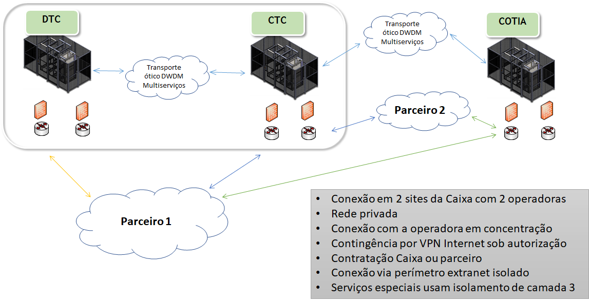
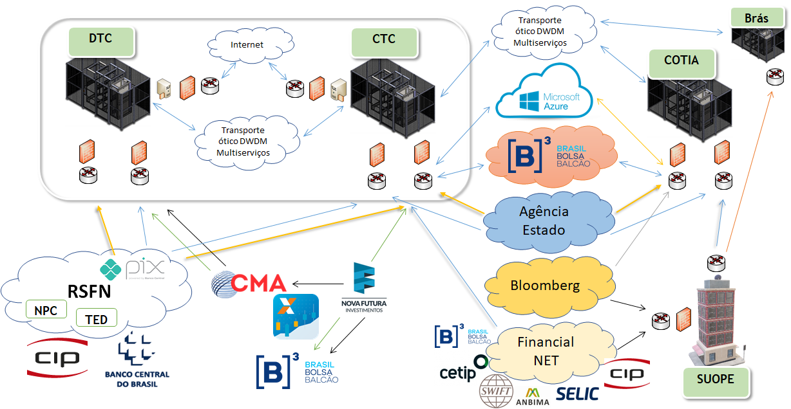
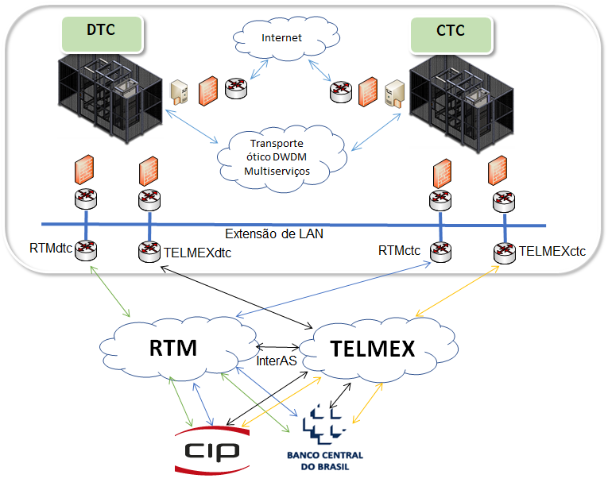
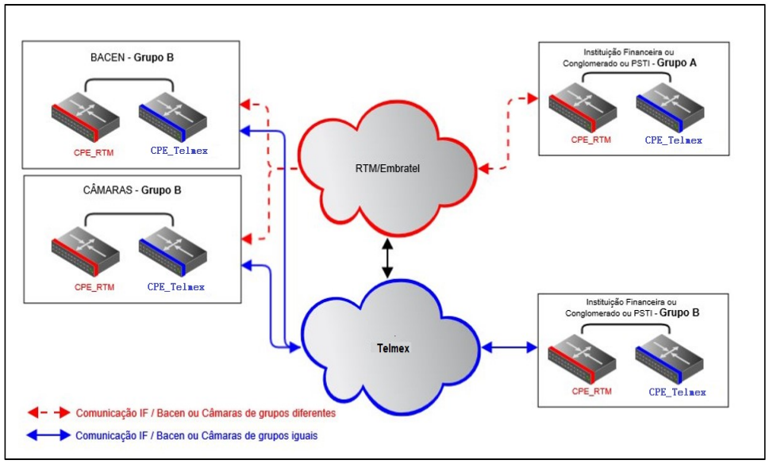
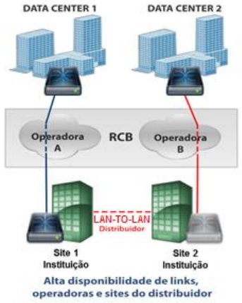

Ecossistema Financeiro
Objetivo
Este documento de arquitetura visa delinear os aspectos funcionais e organizacionais necessários para implantação de Solução de rede de parceiros relacionados ao mercado financeiro, sob uma ótica abrangente ao mesmo tempo em que busca facilitar seu entendimento e demonstrar as principais conexões existentes.
Tecnologias
Introdução
-
As tecnologias utilizadas nesta arquitetura são relacionadas às configurações básicas de rede e, portanto, não carecem de detalhamento amplo.
-
Por outro lado, esta arquitetura se baseia no padrão de conectividade com empresas Parceiras, o qual será apresentado a seguir.
Padrão de Conectividade com Empresas Parceiras
-
As conexões com Empresas Parceiras devem ser feitas através do ambiente Extranet.
-
Deve-se utilizar conexões em 2 (dois) sites distintos da Caixa, preferencialmente com circuitos de operadoras de telecomunicações diferentes.
- O uso de VPN Internet para conexões de contingência pode ser liberado sob ciência e autorização do gestor do serviço, lembrando-o da dificuldade de imputação de responsabilidade nos casos de falhas nos serviços.
-
Sempre que possível deve-se privilegiar o uso de ambientes de Concentração de rede, evitando a necessidade de instalação de equipamentos de operadora especializados para cada conexão.
-
O endereçamento de rede deve seguir o padrão do ambiente extranet no qual se usa segmentos dentro do range privado 172.x.
- Para canais onde o volume de endereçamento necessário é grande, pode ser utilizado outros segmentos públicos ou privados, mas neste caso é obrigatório que o acesso ocorra através de VRF (virtual routing and fowarding) específica.
-
Todas as regras e políticas de firewall devem ser específicas de forma a permitir sua eliminação no caso de término da parceria.
-
As conexões devem ocorrer sempre no roteador de Borda (extranet) e em VRF.
-
Canais e Serviços críticos devem ficar isolados dos demais através do uso de VRF específica.
- Este mecanismo busca evitar que entidades externas possam se comunicar com esses Canais através do roteamento do ambiente da Caixa.
-
Os demais casos devem utilizar a VRF Extranet.
-
-
A topologia base com os pontos de Conexão na Caixa é apresentada abaixo:

-
De modo geral as Empresas parceiras podem se conectar em 3 (três) locais na Caixa, Datacenter Caixa (DTC), Centro Tecnológico Caixa (CTC) e Colocation COTIA.
- Apesar da inclusão do local em COTIA, este só deve ser utilizado em situações especiais que devem ser avaliadas caso a caso.
-
Da mesma forma, em decorrência de pedido para conexão em outro ponto da Caixa, deve-se efetuar análise criteriosa da necessidade.
- Vale lembrar que qualquer ponto do Backbone MPLS da Caixa pode ser elegível para implantação de conexão com Empresas Parceiras desde que haja necessidade justificada.
PRINCÍPIOS
PRINCÍPIOS ARQUITETURAIS
-
A arquitetura do ambiente deve obedecer aos seguintes princípios:
-
Alta disponibilidade
-
Alto desempenho
- Baixa latência
-
Segurança
-
ALTA DISPONIBILIDADE
-
A solução deve permitir a implantação de conexões em pelo menos dois locais distintos.
-
Redundância de equipamentos deve ser utilizada em serviços críticos.
ALTO DESEMPENHO: BAIXA LATÊNCIA
-
O acesso a sistemas transacionais deve ocorrer por conexões de menor latência quando comparada a outras conexões com a mesma qualidade.
-
As configurações devem ser otimizadas visando a redução de overheads.
SEGURANÇA
- Quanto ao quesito segurança, deve-se observar a implantação das proteções citadas no item Tecnologia.
ARQUITETURA DEFINIDA
Arquitetura macro

-
Esta figura representa uma topologia macro da arquitetura onde são apresentadas as principais entidades que fazem parte do ecossistema financeiro.
-
Como pode ser observado, existem 2 pontos de conexão fora do padrão geral, Brás e SUOPE.
-
Apesar de não se tratar de um Datacenter, o prédio da SUOPE é utilizado como ponto de conexão pois hospeda um dos serviços mais críticos da empresa, que é a sala de operação financeira.
-
Este serviço requer conexões de alta qualidade e baixa latência, permitindo que as informações mercadológicas sejam recebidas pelos operadores mais rapidamente assim como as operações executadas no menor tempo possível.
-
O uso do Brás visa permitir redundância local em São Paulo para os acessos provenientes do prédio onde fica a SUOPE.
-
-
Na sequência do documento serão apresentados os principais recursos disponibilizados pelo ambiente.
-
Ressalta-se que as arquiteturas das soluções de redes apresentadas são definidas em grupo técnico próprio visto que não se trata de solução gerida diretamente pela Caixa.
- Por exemplo o caso da RSFN (Rede do Sistema Financeiro Nacional) que é gerida pelo BACEN (Banco Central) em conjunto com comitês técnicos vinculados às entidades participantes.
RFSN (Rede do Sistema Financeiro Nacional)
-
A Rede do Sistema Financeiro Nacional (RSFN) gerida pelo Banco Central do Brasil (BACEN) é uma rede MPLS que possibilita a interconexão dos seus participantes conforme suas necessidades.
-
Em geral as conexões ocorrem entre entidades bancárias, o Banco Central e as Câmaras/Clearings.
-
Os serviços usuais dessa rede são o STR (Sistema de Transferência de Reservas), SITRAF (Sistema de Transferência de Fundos), responsáveis pelo Sistema de Pagamentos Brasileiro, bem como serviços de pagamentos de boletos (na Caixa reconhecido como NPC - Novo Pagamento Caixa) e PIX (Transferências Instantâneas).
-
A Arquitetura dessa rede é definida do Banco Central junto às operadoras responsáveis (Telmex e RTM)
-
Essa arquitetura possui modelos próprios de conexão bem como as regras de roteamento para permitir o balanceamento do tráfego entre as operadoras.
-
Essas e outras definições podem ser obtidas no Manual de Redes da RSFN, que se encontra atualmente na versão 9.2.
-
Para aderência com o ambiente da Caixa utilizou-se o Perfil D com modelo 4, cuja topologia é demonstrada abaixo:

-
Os equipamentos das operadoras estão integrados via protocolo de HSRP (Hot Standby Router Protocol), cuja função permite manter ativo um dos equipamentos da estrutura de acordo com as regras de roteamento estabelecidas no respectivo Manual de Redes.
-
Do lado da Caixa segue o mesmo conceito, utilizando o protocolo VRRP (Virtual Router Redundancy Protocol) visto nosso modelo de equipamento.
-
Na rede LAN entre os roteadores da Caixa e da RSFN apenas um dos quatro roteadores de cada um fica ativo por vez e no caso da queda desse equipamento outro assume o tráfego automaticamente
-
-
Para permitir o balanceamento dos serviços na RSFN foram criados dois grupos, A e B. O BACEN e as Câmaras foram definidos como grupo B, enquanto as instituições bancárias foram distribuídas nos grupos A ou B, conforme demonstra a figura abaixo:

-
Como demonstrado na figura, o tráfego entre instituições do mesmo grupo flui primariamente pela Telmex enquanto de grupos diferentes fluem pela RTM.
-
A Caixa está no Grupo B, portanto o tráfego principal é responsabilidade da Telmex (antiga primesys).
-
Como exposto, no perfil e modelo adotado, a Caixa não possui controle sobre a operadora utilizada, já que isto está definido dentro das políticas da RSFN. Assim, mesmo que a Caixa force o tráfego via roteamento estático para o roteador da RTM ele não fluirá por ela, esta encaminhará, na própria LAN da Caixa, para o roteador da Telmex para envio à rede.
-
Desta forma, para migrar o tráfego da Telmex para a RTM há necessidade de desativar as interfaces dos dois roteadores da Telmex o que deve ser feito apenas com acompanhamento das operadoras.
-
-
-
Estas regras servem para os serviços legados, no caso do PIX, houve um novo conceito para disponibilização do serviço.
-
O BACEN ativou este Sistema em dois sites que estão nos grupos A e B respectivamente. Assim, independentemente da instituição é possível enviar e receber tráfego pelas duas operadoras simultaneamente.
-
O balanceamento ocorre através de consultas DNS, cujo controle fica a cargo do BACEN.
-
De acordo com as políticas, disponibilidade e carga do sistema em cada site do BACEN, o tráfego é distribuído visando garantir a melhor experiência para o serviço.
-
Rede Financial Net (RTM)
-
A Rede Financial Net operada pela RTM permite acesso a outros provedores de serviços financeiros tais como B3 (Bolsa de valores), SELIC (Sistema Especial de Liquidação de Custodia), CETIP (Central de Custodia e Liquidação Financeira de Títulos), ANBIMA (Associação Brasileira das Entidades dos Mercados Financeiro e de Capitais), SWIFT (Society for Worldwide Interbank Financial Telecomunication), dentre outras.
-
Cada um destes provedores é responsável por suportar seu nicho de transações financeiras, como no caso da SWIFT que permite as operações de câmbio e transferências internacionais, assim como a SELIC que atua nas operações com títulos públicos.
-
São operações críticas que requerem redes seguras e estáveis.
-
As conexões com a Caixa ocorrem no prédio da SUOPE e no CTC.
-
A política de roteamento é baseada em BGP com prioridade de tráfego baseado em cada serviço.
-
Nos serviços acessados pela SUOPE, o tráfego prioritário ocorre pela conexão do próprio prédio, assim como para o tráfego de serviços com origem/destino nos Datacenters, o tráfego prioritário segue pela conexão do CTC.
-
-
Para evitar a necessidade de alteração no endereçamento interno da Caixa, a RTM efetua NAT destes endereços em seu ambiente.
- Desta forma, para facilitar o troubleshooting conjunto é conveniente que tenhamos o registro desses NAT nas nossas unidades de suporte, atualizando esse controle sempre que houver alteração com a retirada ou inclusão de novo serviço.
Ambiente de negociação de Ações - Corretoras
-
As conexões com as Corretoras permitem operar no mercado de ações consumindo todo o leque de opções existentes na Bolsa (B3).
-
Esses serviços são utilizados tanto pela Sala de Operação Financeira da Caixa quanto pelos clientes.
-
No caso dos clientes da Caixa, as operações podem ser efetuadas diretamente no Home Broker Caixa.
-
-
Na data de elaboração desse documento a corretora contratada pela Caixa é a Nova Futura.
-
Seguindo o contrato firmado entre as instituições, a Nova Futura instalou conexões de dados em ambos os Datacenters da Caixa.
-
Para operar com alta disponibilidade a Nova Futura utiliza serviços de conectividade através da CMA.
-
Todas as conexões envolvidas seguem o padrão e usam protocolo de roteamento dinâmico BGP de forma a permitir a comutação automática em caso de falha em algum dos caminhos.
Conexão Agência Estado
-
Agência estado é uma agência de notícias utilizada pelos gestores da área financeira para elaborar estratégia de investimentos.
-
As conexões seguem o padrão de conectividade com empresas parceiras e usam 4 circuitos de dados, dois no CTC e dois em COTIA.
-
A conexão de COTIA foi autorizada pois o serviço é fundamental para a Superintendência de Operações instalada em São Paulo.
-
Desta forma é possível reduzir a latência e os pontos de falha para a unidade minimizando os riscos de indisponibilidade do serviço.
-
Da mesma forma que ocorre na Financial Net, o roteamento deve ser configurado para permitir que o tráfego principal dos usuários de São Paulo flua pelo circuito de COTIA enquanto o tráfego dos usuários de Brasília seja encaminhado pelo CTC.
-
Conexão Bloomberg
-
Bloomberg é outra empresa usada pela área de Operações Financeiras, cujo serviço permite acesso às informações em tempo real sobre todos os mercados, notícias, pesquisas e, até mesmo, a execução e gestão de ordens.
-
Por se tratar de serviço intrinsicamente relacionado com a atividade da SUOPE, uma das conexões é feita no próprio prédio da mesma, permitindo redução de latência e pontos de falha.
- A contingência é feita através de COTIA, também instalada na grande São Paulo, de forma a permitir a mesma experiência para o usuário mesmo com a queda do circuito principal.
-
Da mesma forma que as demais redes, a solução utiliza protocolo BGP para roteamento do tráfego, assim, no caso de queda de um dos caminhos, o tráfego é automaticamente comutado para o outro circuito.
Conexão B3
-
A B3 é a entidade que agrupou as instituições BOVESPA e BM&F e gerencia os balcões de negócios em ações e mercados futuros.
-
A Caixa possui conexão direta com a B3 apesar de operar Ações através da corretora Nova Futura.
-
Para permitir padronização junto ao mercado a B3 elaborou um documento denominado Book de Conectividade BM&FBOVESPA, que se encontra na versão 7.3, e possui as modalidades e especificações para implantação de conexões junto a entidade.
-
Neste ambiente a Caixa adotou o modelo de conexão denominado RCB (Rede de Comunicação B3).
-
Mais especificamente, utilizou-se o modelo de conectividade através de operadoras de telecomunicações disponíveis no portifólio de contratos da Caixa e que fornecem este serviço com a B3.
-
O serviço de conectividade via RCB permite conexão através de diversas tecnologias, tais como Fibra Apagada, DWDM, Metro Ethernet, dentre outros.
-
A padronização estabelece ainda diversos mecanismos possíveis para implantação de alta disponibilidade, das quais escolheu-se o protocolo BGP.
-
A arquitetura de conexão é mostrada abaixo, onde as conexões da Caixa são direcionadas a sites distintos da B3, permitindo com isto maior proteção contra falhas mitigando riscos.
-

{width="2.4272451881014874in" height="3.035825678040245in"}Considerações Gerais
-
As soluções de conectividade com as instituições financeiras foram pensadas para permitir conexões otimizadas, redundantes, estrategicamente posicionadas para melhorar a experiência do usuário e mitigar riscos.
-
Apesar disto, uma terceira opção de contingência está prevista para diversos serviços.
-
Como algumas instituições dispõem de serviços publicados na diretamente Internet, o acesso aos mesmos pode ser disponibilizado através dos Proxy de Internet instalados no CTC e DTC.
-
Este processo não é automático, por isso é importante que o procedimento de virada seja de conhecimento das unidades de suporte para serem executados de forma rápida em caso de necessidade.
-
-
O ambiente Azure Cloud presente na topologia da arquitetura se refere a estrutura do Open Banking Caixa, instalado nessa Nuvem.
-
Os serviços disponibilizados pelo Open Banking estão sendo ampliados, mas dentro do escopo presente pode atuar como Iniciador de Pagamentos (PISP) do PIX.
-
Atualmente não dispomos de conexão direta entre a nuvem e o BACEN, de forma que o tráfego deve fluir pelo express route até os datacenters DTC/CTC onde executará os micro serviços de envio de transações para o PIX no BACEN através da RFSN.
-
Histórico da Revisão
| Data | Versão | Descrição | Autor |
|---|---|---|---|
| 15/02/2022 | 1.0 | Rede Financeira versão inicial | Luiz Gilmar P de S e Silva |